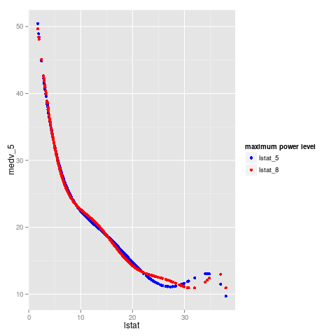

Linear regression
Table of Contents
Theory
Introduction
Math symbols
| Notation | Meaning |
|---|---|
| \(\mathbf{x} = \begin{bmatrix} 1 \\ x_1 \\ x_2 \\ \vdots \\ x_p \end{bmatrix} = \begin{bmatrix} x_0 \\ x_1 \\ x_2 \\ \vdots \\ x_p \end{bmatrix} \in\mathbb{R}^{(p+1)\times 1}\) | input variables, features, predictors |
| \(y=f(\mathbf{x}) + \epsilon\) | output/target variable |
| \(\hat{y} = \hat{f}(\mathbf{x})= h(\mathbf{x}) = h_{\pmb{\theta}}(\mathbf{x})\) | hypothesis function of \(\mathbf{x}\) with parameter \(\pmb{\theta}\) |
| \(\mathbf{x}^{(i)} = \begin{bmatrix} x_0^{(i)} \\ x_1^{(i)} \\ \vdots \\ x_p^{(i)} \end{bmatrix}\) | \(i^{th}\) observation of \(\mathbf{x}\) where \(1 \leq i \leq n\) |
| \(y^{(i)}\) | \(i^{th}\) observation of \(y\) where \(1 \leq i \leq n\) |
| \(\mathbf{y}= \begin{bmatrix} y^{(1)} \\ y^{(2)} \\ \vdots \\ y^{(n)} \end{bmatrix}\in \mathbb{R}^{n \times 1}\) | \(n\) observations of \(y\) |
| \(\mathbf{X}= \begin{bmatrix}\big(\mathbf{x}^{(1)}\big)^{T} \\ \big(\mathbf{x}^{(2)}\big)^{T} \\ \vdots \\ \big(\mathbf{x}^{(n)}\big)^{T} \end{bmatrix} \in \mathbb{R}^{n \times (p+1)}\) | \(n\) observations of \(\mathbf{x}\) |
| \(n\) | # of traing examples |
| \(p\) | # of traing p-redictors, features (excluding addtional 1 vector) |
| \(\pmb{\theta} = \begin{bmatrix} \theta_0 \\ \theta_1 \\ \vdots \\ \theta_n \end{bmatrix}\) | parameter of hypothesis funtion(model) |
Using a single number for estimation: \(\hat{y} = \theta_0\)
Given \(\mathbf{y}=[y^{(1)}, y^{(2)}, ..., y^{(n)}]^{T}\), Find
\begin{equation} \theta_0 = \arg\min_{\hat{\theta}_0} RSS = \arg\min_{\hat{\theta}_0} \sum_{i=1}^{n}(y^{(i)} - \hat{\theta}_0)^2 \end{equation}Solution:
- Rewrite RSS as \(RSS=A \hat{\theta}_0^{2} + B \hat{\theta}_0 + C\), note that \(A=n>0\), thus using the basic knowledge from high school, we get \(\theta_0=-\frac{B}{2A}\).
Or we can:
\begin{equation} \frac{\partial RSS}{\partial \theta_0} = \sum_{i=1}^{n} 2(y_i - \theta_0) (-1)=0 \end{equation}- Thus, \(\theta_0=mean(\mathbf{y})\), which is used in:
- calculating TSS
- kNN regression (For a observation's neighbors)
- and regression tree (For each leaf/terminal node)
Using one predictor for estimation: \(\hat{y} = \theta_0 + \theta_1 x_1\)
Given:
- \(\mathbf{X}=\begin{bmatrix} 1, x_1^{(1)} \\ 1, x_1^{(2)} \\ \vdots \\ 1, x_1^{(n)}\end{bmatrix} = \begin{bmatrix} x_0^{(1)}, x_1^{(1)} \\ x_0^{(2)}, x_1^{(2)} \\ \vdots \\ x_0^{(n)}, x_1^{(n)}\end{bmatrix}\)
- \(\mathbf{y}=[y^{(1)}, y^{(2)}, ..., y^{(n)}]^{T}\)
Find
\begin{equation} (\theta_0, \theta_1) = \arg\min_{\hat{\theta}_0, \hat{\theta}_1} RSS = \arg\min_{\hat{\theta}_0, \hat{\theta}_1} \sum_{i=1}^{n}(y^{(i)} - (\hat{\theta}_0 + \hat{\theta}_1 x_1^{(i)}))^2 \end{equation}Again,
\begin{equation} \frac{\partial RSS}{\partial \theta_0} = 0 \end{equation} \begin{equation} \frac{\partial RSS}{\partial \theta_1} = 0 \end{equation}We'll get
- \(\theta_1 = cor(\mathbf{x}_1,\mathbf{y}) \frac{sd(\mathbf{y})}{sd(\mathbf{x}_1)} = \frac{\frac{1}{n}\sum_{i=1}^n (x_1^{(i)} - \bar{x}_1) (y^{(i)} - \bar{y})}{\sqrt{\frac{1}{n}\sum_{i=1}^n (x_1^{(i)} - \bar{x}_1)^2} \sqrt{\frac{1}{n}\sum_{i=1}^n (y^{(i)} - \bar{y}_1)^2}} \frac{\sqrt{\frac{1}{n}\sum_{i=1}^n (y^{(i)} - \bar{y})^2}}{\sqrt{\frac{1}{n}\sum_{i=1}^n (x_1^{(i)} - \bar{x}_1)^2}}\)
- \(\theta_0 = mean(\mathbf{y}) - \theta_1 mean(\mathbf{x}_1) = \bar{y} - \theta_1 \bar{x}_1\)
Property of residual
Uncertainty of model
Note:
- \(\mathbf{X}\) is known
- \(y = f(\mathbf{x}) + \epsilon\) where \(\epsilon\) is a random variable, thus \(y\) is also a random variable
- \(\theta_0, \theta_1\) is a funciton of \(\mathbf{y}=(y^{(1)}, y^{(2)}, ..., y^{(n)})\), so also a random variable
We have:
- \(\hat{\sigma}^2 = \frac{RSS}{n-p-1}=\frac{RSS}{n-2}\)
- \(\sigma^2_{\theta_0} = \sigma^2 \big(\frac{1}{n} + \frac{\bar{x}_1^2}{\sum_{i=1}^n (x_1^{(i)} - \bar{x}_1)^2} \big) \approx \hat{\sigma}^2 \big(\frac{1}{n} + \frac{\bar{x}_1^2}{\sum_{i=1}^n (x_1^{(i)} - \bar{x}_1)^2} \big)\)
- \(\sigma^2_{\theta_1} = \sigma^2 \frac{1}{\sum_{i=1}^n (x_1^{(i)} - \bar{x}_1)^2} \approx \hat{\sigma}^2 \frac{1}{\sum_{i=1}^n (x_1^{(i)} - \bar{x}_1)^2}\)
- \(SE_{prediction} = \hat{\sigma} \sqrt{1+\frac{1}{n} + \frac{(x_1^{'} - \bar{x}_1)^2} {\sum_{i=1}^n (x_1^{(i)} - \bar{x}_1)^2}}\) at \(x_1 = x_1^{'}\)
- \(SE_{line} = \hat{\sigma} \sqrt{\frac{1}{n} + \frac{(x_1^{'} - \bar{x}_1)^2} {\sum_{i=1}^n (x_1^{(i)} - \bar{x}_1)^2}} = \hat{\sigma} \sqrt{\text{leverage statistic}(x^{'}_1)}\) at \(x_1 = x_1^{'}\)
To understand:
- If \(\bar{x}_1 = 0\), \(\sigma^2_{\theta_0} = \frac{\sigma^2}{n}\)
- As \(n \to \infty\):
- \(\sigma^2_{\theta_0} = \sigma^2_{\theta_1} = SE_{line} = 0\), uncertainty surrounding the average \(y\) at \(x_1^{'}\), related to uncertainty of \(\theta_0, \theta_1\)
- \(SE_{prediction} = \sigma\), uncertainty surrounding a particular \(y\) at \(x_1^{'}\), which includes irreducible error
General regression: \(\hat{y} = \theta_0 + \theta_1 x_1 + ... + \theta_p x_p\)
- Given Experience(E):
- \(n\) observations \(\mathbf{X} \in \mathcal{R}^{n \times p}\)
- \(\mathbf{y} \in \mathcal{R}^{n \times 1}\)
- The task(T) is: predicting \(y\) using model \(h(\mathbf{x}) = h_{\pmb{\theta}}(\mathbf{x})\),
- Performance(P): Which minimizes loss(error) fuction \(J(\pmb{\theta})\)
For linear regression:
- \(J(\pmb{\theta}) = \sum_{i=1}^{n} \big(h_{\pmb{\theta}}(\mathbf{x}^{(i)}) - y^{(i)}\big)^2=RSS(\pmb{\theta})\)
- \(h_{\pmb{\theta}}(\mathbf{x}) = \langle \pmb{\theta}, \mathbf{x} \rangle = \mathbf{x}^{T} \pmb{\theta} = \theta_0 + \theta_1 x_1 + ... + \theta_p x_p\)
We can get \(\pmb{\theta}\) through: \(\frac{\partial J(\pmb{\theta})}{\partial \pmb{\theta}} = 0\)
Maximum likelihood estimation
Assuming:
- \(y = \theta_0 + \theta_1 x_1 + ... + \theta_p x_p + \epsilon\)
- \(\epsilon \sim N(0, \sigma^2)\), i.i.d.
- \(\mathbf{X}\) is known
Then likelihood funciton: \(P(\mathbf{y}|\pmb{\theta}, \mathbf{X}) = \prod_{i=1}^{n} P(\mathbf{y_i}| \pmb{\theta},\mathbf{X}) \\ = \prod_{i=1}^{n} \frac{1}{\sqrt{2\pi} \sigma} \text{exp}^{ - \frac{(y_i - (\theta_0 + \theta_1 x_1 + ... + \theta_p x_p))^2}{2\sigma^2}}\)
Log likelihood function: \(\log(P(\mathbf{y_i}| \pmb{\theta},\mathbf{X})) = \sum_{i=1}^{n} \big( \log (\frac{1}{\sqrt{2\pi} \sigma}) - \frac{(y_i - (\theta_0 + \theta_1 x_1 + ... + \theta_p x_p))^2}{2\sigma^2} \big) \\ = n \log (\frac{1}{\sqrt{2\pi} \sigma}) + \sum_{i=1}^{n} \big( - \frac{(y_i - (\theta_0 + \theta_1 x_1 + ... + \theta_p x_p))^2}{2\sigma^2} \big) \\ = n \log (\frac{1}{\sqrt{2\pi} \sigma}) - \frac{1}{2\sigma^2} \sum_{i=1}^{n} (y_i - (\theta_0 + \theta_1 x_1 + ... + \theta_p x_p))^2\\ = n \log (\frac{1}{\sqrt{2\pi} \sigma}) - \frac{1}{2\sigma^2} \text{RSS}(\pmb{\theta})\)
Thus maximum likelihood estimatoin of \(\pmb{\theta}\) is equivalent to LS.
Generalized linear model(glm) for gaussian case
- A random component: normal, bernolli, possion, etc.
- A systematic component: a linear predictor \(\pmb{\theta}^T \mathbf{x^{(i)}}\)
- Link function connects \(E(y^{(i)}) \xrightarrow{g()} \pmb{\theta}^T \mathbf{x^{(i)}}\), i.e, \(g\big(E(y^{(i)})\big) = \pmb{\theta}^T \mathbf{x^{(i)}}\)
| Distribution of \(y^{(i)}\) | E(y(i)) | Var(y(i)) | linear combination of x | Link Function \(g()\) |
|---|---|---|---|---|
| \(N(\mu_i, \sigma^2)\) | \(\mu_i\) | \(\sigma^2\) | \(\pmb{\theta}^T \mathbf{x^{(i)}}\) | \(g(\mu_i) = \mu_i\) |
| Bernolli(\(p_i\)) | \(p_i\) | \(p_i(1-p_i)\) | the same to above | \(g(p_i) = log( \frac{p_i}{1-p_i} )\) |
| Possion(\(\lambda_i\)) | \(\lambda_i\) | \(\lambda_i\) | the same to above | \(g(\lambda_i) =log(\lambda_i)\) |
Assumations
- Additive
- the effect of change in \(x_j\) on \(y\) is independent of the other predictors
- Linear
- change in \(Y\) is constant due to a one-unite change in \(x_j\)
Model related concept
Model assessment parameters, which are shown in summary(lm())
- \(R^2 = 1 - \frac{RSS}{TSS}\) where \(RSS = \sum_{i} (y^{(i)} - \hat{y}^{(i)})^2\) and \(TSS = \sum_{i} (y^{(i)} - \bar{y})^2\)
- \(R^2 = 1 \text{ if } RSS=0\)
- \(R^2 = 0 \text{ if } RSS=TSS\), i.e, using \(\bar{y}\) as the estimate for each observation.
- \(R^2 = \rho^2\) where \(\rho=cor(\mathbf{x}_1, \mathbf{y})\) if there are only one predictor, i.e, \(\mathbf{X}\in \mathcal{R}^{n \times 1}\).
- \(RSE = \sqrt{\frac{\sum_{i=1}^{n}(y^{(i)} - \hat{y}^{(i)})^2}{n-p-1}}=\sigma\), sd of \(\epsilon\), \(RSE^2\) is the power of noise
- E\(\epsilon = 0 = \sum_{i=1}^{n} (y^{(i)} - \hat{y} ^{(i)})\)
- If F-statistic >> 1, reject \(H_0\)
- all regression coefficents are 0, \(H_0: \theta_0 = \theta_1 = ... \theta_p = 0\)
- \(H_a\): at least one \(\theta_j\) is non zero
- summary to a single number \(R^2\): will throw out lots of information.
Other
- Confidence interval (Line) VS prediction interval
- \(SE_{line}\), the average \(y\) at \(\mathbf{x}\), which only considers the error in the estimate of \(f(\mathbf{x})\)
- \(SE_{prediction}\), a particular \(y\) at \(\mathbf{x}\), which considers the irreducible error and the error in the estimate of \(f(\mathbf{x})\)
- variance inflation factor(VIF): \(VIF(\theta_j) = \frac{1}{1-R^2_{x_j|x_{-j}}} =
f(R^2_{x_j|x_{-j}})\) VS 5. The larger VIF for \(x_j\), the more
collinearity \(x_j\) with other predictors \(x_{-j}\)
- \(R^2 \in [0, 1]\)
- \(VIF \in [1, +\infty]\)
- multicollinearity results in a great deal of uncertainty in the coefficents estimate(think of the contour plots, why the name of variance inflation), cause the SE of coefficents to grow, which has a wider CI, so we may fail to reject H_0: \(\beta_j=0\), the probability of correctly detecting a non-zero coefficents is reduced by collinearity.
- Leverage: \(h^{(i)} = \frac{1}{n} + \frac{||\mathbf{x}^{(i)} -\bar{\mathbf{x}}^{(i)}||^2}{\sum_{i^{'}=1}^{n} || \mathbf{x}^{(i)} -\bar{\mathbf{x}}^{(i)}||^2 }\)
- Outlier: high residual
Lab: linear regression
Explore data
Use ggpairs() to plot the scatter matrix. It's show that lstat (-0.738) and rm (0.695) has the largest cor() with medv.
library(ISLR) library(ggplot2) library(GGally) library(MASS) ggpairs(Boston)
Simple linear regression
Regressing medv (房价中位数) onto lstat (低社会经济阶层家庭百分比) using simple linear regression.
### * Load library library(MASS) # large collections of datasets and functions library(ISLR) # functions and datasets assoicated with ISL book ### * Explore data str(Boston) ### * Fit simple_linear_regression_model <- lm(medv ~ lstat, data = Boston)
Attaching package: ‘MASS’
The following object is masked from ‘package:dplyr’:
select
'data.frame': 506 obs. of 14 variables:
$ crim : num 0.00632 0.02731 0.02729 0.03237 0.06905 ...
$ zn : num 18 0 0 0 0 0 12.5 12.5 12.5 12.5 ...
$ indus : num 2.31 7.07 7.07 2.18 2.18 2.18 7.87 7.87 7.87 7.87 ...
$ chas : int 0 0 0 0 0 0 0 0 0 0 ...
$ nox : num 0.538 0.469 0.469 0.458 0.458 0.458 0.524 0.524 0.524 0.524 ...
$ rm : num 6.58 6.42 7.18 7 7.15 ...
$ age : num 65.2 78.9 61.1 45.8 54.2 58.7 66.6 96.1 100 85.9 ...
$ dis : num 4.09 4.97 4.97 6.06 6.06 ...
$ rad : int 1 2 2 3 3 3 5 5 5 5 ...
$ tax : num 296 242 242 222 222 222 311 311 311 311 ...
$ ptratio: num 15.3 17.8 17.8 18.7 18.7 18.7 15.2 15.2 15.2 15.2 ...
$ black : num 397 397 393 395 397 ...
$ lstat : num 4.98 9.14 4.03 2.94 5.33 ...
$ medv : num 24 21.6 34.7 33.4 36.2 28.7 22.9 27.1 16.5 18.9 ...
Model assessment result using \(RSE, R^2\), F-statistic:
- \(RSE = 6.216\)
- \(R^2 = 54.32%\)
- F-statistic = 601.1 >> 1, so we are able to reject \(H_0: \theta_0 = \theta_1 = 0\)
- p value for both intercept \(\theta_0\) and lstat \(\theta_1\) are very small, so we are able to reject \(H_0: \theta_0=0\) and \(H_0: \theta_1=0\). Later we will use CI(Confidence interval) to get the same result.
### ** RSE, R^2, F-statistic ## RSE: residual standard error, estimate of sigma_epsilon ## R^2: [0, 1], 1 - RSS/TSS, 0 ~ denotes the same performance of mean(y), 1 denotes perfect ## F-statistic: H_0: beta_1 = beta_2 = beta_p = 0, if > 1, reject H_0 summary(simple_linear_regression_model)
Call:
lm(formula = medv ~ lstat, data = Boston)
Residuals:
Min 1Q Median 3Q Max
-15.168 -3.990 -1.318 2.034 24.500
Coefficients:
Estimate Std. Error t value Pr(>|t|)
(Intercept) 34.55384 0.56263 61.41 <2e-16 ***
lstat -0.95005 0.03873 -24.53 <2e-16 ***
---
Signif. codes: 0 ‘***’ 0.001 ‘**’ 0.01 ‘*’ 0.05 ‘.’ 0.1 ‘ ’ 1
Residual standard error: 6.216 on 504 degrees of freedom
Multiple R-squared: 0.5441, Adjusted R-squared: 0.5432
F-statistic: 601.6 on 1 and 504 DF, p-value: < 2.2e-16
Get the coefficients using coef() and their confidence interval using confint():
- \([33.448457 35.6592247]\) doesn't include 0, thus reject \(H_0: \theta_0=0\)
- \([-1.026148 -0.8739505]\) doesn't include 0, thus reject \(H_0: \theta_1=lstat=0\)
coef(simple_linear_regression_model) ## Confidence interval of beta, more understandabel than p-value confint(simple_linear_regression_model) # beta_0 + c( -1, 1) * qt(.975, dof) * se(beta_0)
(Intercept) lstat
34.5538409 -0.9500494
2.5 % 97.5 %
(Intercept) 33.448457 35.6592247
lstat -1.026148 -0.8739505
Predict and get the confidence interval and predict interval.?
### * Predict predict(simple_linear_regression_model, data.frame(lstat = c(5, 10, 15))) predict(simple_linear_regression_model, data.frame(lstat = c(5, 10, 15)), interval="prediction") # particular y predict(simple_linear_regression_model, data.frame(lstat = c(5, 10, 15)), interval="confidence") # line, average y
1 2 3
29.80359 25.05335 20.30310
fit lwr upr
1 29.80359 17.565675 42.04151
2 25.05335 12.827626 37.27907
3 20.30310 8.077742 32.52846
fit lwr upr
1 29.80359 29.00741 30.59978
2 25.05335 24.47413 25.63256
3 20.30310 19.73159 20.87461
Plot the training dataset and fitted line:
plot(Boston$lstat, Boston$medv, main = "simple linear regression(Training data)") abline(simple_linear_regression_model, col = "red")
Using plot(lm_model) to get the four diagnostic plots. (normal QQ plot?)
- residuals: \(y^{(i)} - \hat{y}^{(i)}\)
- studentized residuals: \(\frac{y^{(i)} - \hat{y}^{(i)}}{RSE (1-h_{ii})}\)
- leverage statistics: \(h^{(i)} = \frac{1}{n} + \frac{ ||\mathbf{x}^{(i)} -\bar{\mathbf{x}}^{(i)}||^2 }{\sum_{i^{'}=1}^{n} || \mathbf{x}^{(i)} -\bar{\mathbf{x}}^{(i)}||^2 }\) (to check for p>1)
par(mfrow = c(2, 2)) plot(simple_linear_regression_model)
We can also plot the diagnostic plot mannually.
par(mfrow = c(2, 2)) plot(predict(simple_linear_regression_model), residuals(simple_linear_regression_model), main = "residual plot") plot(predict(simple_linear_regression_model), rstudent(simple_linear_regression_model), main = "studentized residuals") plot(hatvalues(simple_linear_regression_model), main = "leverage statistics") plot(hatvalues(simple_linear_regression_model), rstudent(simple_linear_regression_model), xlab = "leverage statistics", ylab = "studentlized residuals", main = "levearge statistics VS studentlized residuals")
Multiple linear regression
Since \(lstat, rm\) has largest \(\rho\) related to \(medv\), we regress \(medv\) to them:
lm_two_feature <- lm(medv ~ lstat + rm, data = Boston)
summary(lm_two_feature)
Call:
lm(formula = medv ~ lstat + rm, data = Boston)
Residuals:
Min 1Q Median 3Q Max
-18.076 -3.516 -1.010 1.909 28.131
Coefficients:
Estimate Std. Error t value Pr(>|t|)
(Intercept) -1.35827 3.17283 -0.428 0.669
lstat -0.64236 0.04373 -14.689 <2e-16 ***
rm 5.09479 0.44447 11.463 <2e-16 ***
---
Signif. codes: 0 ‘***’ 0.001 ‘**’ 0.01 ‘*’ 0.05 ‘.’ 0.1 ‘ ’ 1
Residual standard error: 5.54 on 503 degrees of freedom
Multiple R-squared: 0.6386, Adjusted R-squared: 0.6371
F-statistic: 444.3 on 2 and 503 DF, p-value: < 2.2e-16
How about regress using all predictors?
lm_all_feature <- lm(medv ~ ., data = Boston) # . denotes other variable except medv? summary(lm_all_feature) # Find the feature with largest p value
crim zn indus chas nox rm age dis
1.792192 2.298758 3.991596 1.073995 4.393720 1.933744 3.100826 3.955945
rad tax ptratio black lstat
7.484496 9.008554 1.799084 1.348521 2.941491
## Remove features that has large p value, i.e, 0.95 confidence intervel has 0 confint(lm_all_feature) # See age and indus lm_all_but_age <- lm(medv ~ . - age, data = Boston) summary(lm_all_but_age) lm_all_but_age_indus <- lm(medv ~ . - age - indus, data = Boston) summary(lm_all_but_age_indus)
2.5 % 97.5 %
(Intercept) 26.432226009 46.486750761
crim -0.172584412 -0.043438304
zn 0.019448778 0.073392139
indus -0.100267941 0.141385193
chas 0.993904193 4.379563446
nox -25.271633564 -10.261588893
rm 2.988726773 4.631003640
age -0.025262320 0.026646769
dis -1.867454981 -1.083678710
rad 0.175692169 0.436406789
tax -0.019723286 -0.004945902
ptratio -1.209795296 -0.695699168
black 0.004034306 0.014589060
lstat -0.624403622 -0.425113133
Call:
lm(formula = medv ~ . - age, data = Boston)
Residuals:
Min 1Q Median 3Q Max
-15.6054 -2.7313 -0.5188 1.7601 26.2243
Coefficients:
Estimate Std. Error t value Pr(>|t|)
(Intercept) 36.436927 5.080119 7.172 2.72e-12 ***
crim -0.108006 0.032832 -3.290 0.001075 **
zn 0.046334 0.013613 3.404 0.000719 ***
indus 0.020562 0.061433 0.335 0.737989
chas 2.689026 0.859598 3.128 0.001863 **
nox -17.713540 3.679308 -4.814 1.97e-06 ***
rm 3.814394 0.408480 9.338 < 2e-16 ***
dis -1.478612 0.190611 -7.757 5.03e-14 ***
rad 0.305786 0.066089 4.627 4.75e-06 ***
tax -0.012329 0.003755 -3.283 0.001099 **
ptratio -0.952211 0.130294 -7.308 1.10e-12 ***
black 0.009321 0.002678 3.481 0.000544 ***
lstat -0.523852 0.047625 -10.999 < 2e-16 ***
---
Signif. codes: 0 ‘***’ 0.001 ‘**’ 0.01 ‘*’ 0.05 ‘.’ 0.1 ‘ ’ 1
Residual standard error: 4.74 on 493 degrees of freedom
Multiple R-squared: 0.7406, Adjusted R-squared: 0.7343
F-statistic: 117.3 on 12 and 493 DF, p-value: < 2.2e-16
Call:
lm(formula = medv ~ . - age - indus, data = Boston)
Residuals:
Min 1Q Median 3Q Max
-15.5984 -2.7386 -0.5046 1.7273 26.2373
Coefficients:
Estimate Std. Error t value Pr(>|t|)
(Intercept) 36.341145 5.067492 7.171 2.73e-12 ***
crim -0.108413 0.032779 -3.307 0.001010 **
zn 0.045845 0.013523 3.390 0.000754 ***
chas 2.718716 0.854240 3.183 0.001551 **
nox -17.376023 3.535243 -4.915 1.21e-06 ***
rm 3.801579 0.406316 9.356 < 2e-16 ***
dis -1.492711 0.185731 -8.037 6.84e-15 ***
rad 0.299608 0.063402 4.726 3.00e-06 ***
tax -0.011778 0.003372 -3.493 0.000521 ***
ptratio -0.946525 0.129066 -7.334 9.24e-13 ***
black 0.009291 0.002674 3.475 0.000557 ***
lstat -0.522553 0.047424 -11.019 < 2e-16 ***
---
Signif. codes: 0 ‘***’ 0.001 ‘**’ 0.01 ‘*’ 0.05 ‘.’ 0.1 ‘ ’ 1
Residual standard error: 4.736 on 494 degrees of freedom
Multiple R-squared: 0.7406, Adjusted R-squared: 0.7348
F-statistic: 128.2 on 11 and 494 DF, p-value: < 2.2e-16
Performance on training data:
- \(R^2\) increases as the number of predictors used in regression, even the predictor is the noise. ( \(p\) 元、\(n\) 个方程, \(p\) 增达到\(n\),方程有解, \(RSS=0, R^2=1\)), lead to overfit.
- \(RSE, R_{adjusted}^2\) penalize if \(p\) is too large
| method | \(R^2\) | \(R^2_{adjusted}\) | RSE | F-statistic |
|---|---|---|---|---|
| 1 predictor | 0.5441 | 0.5432 | 6.216 | 601.6 |
| 2 perdictors | 0.6386 | 0.6371 | 5.540 | 444.3 |
| all predictors | 0.74064266410940938 | 0.7343 | 4.745 | 117.3 |
| all but age | 0.74064121655051440 | 0.7343 | 4.740 | 117.3 |
| all but age, indus | 0.74058228025695738 | 0.7348 | 4.736 | 128.2 |
Interacton terms: [removing additive assumation]
summary(lm(medv ~ lstat * age, data = Boston)) # i.e, lstat + age + lstat:age
Call:
lm(formula = medv ~ lstat * age, data = Boston)
Residuals:
Min 1Q Median 3Q Max
-15.806 -4.045 -1.333 2.085 27.552
Coefficients:
Estimate Std. Error t value Pr(>|t|)
(Intercept) 36.0885359 1.4698355 24.553 < 2e-16 ***
lstat -1.3921168 0.1674555 -8.313 8.78e-16 ***
age -0.0007209 0.0198792 -0.036 0.9711
lstat:age 0.0041560 0.0018518 2.244 0.0252 *
---
Signif. codes: 0 ‘***’ 0.001 ‘**’ 0.01 ‘*’ 0.05 ‘.’ 0.1 ‘ ’ 1
Residual standard error: 6.149 on 502 degrees of freedom
Multiple R-squared: 0.5557, Adjusted R-squared: 0.5531
F-statistic: 209.3 on 3 and 502 DF, p-value: < 2.2e-16
Non-linear transformations of the predictors
It's shown that \(medv, lstat\) in not linear relationship in scatter matrix plot. Thus, we try to regression onto \(lstat, lstat^2\).
{kind=link}
lm_quad_lstat <- lm(medv ~ lstat + I(lstat^2), data = Boston)
summary(lm_quad_lstat)
Call:
lm(formula = medv ~ lstat + I(lstat^2), data = Boston)
Residuals:
Min 1Q Median 3Q Max
-15.2834 -3.8313 -0.5295 2.3095 25.4148
Coefficients:
Estimate Std. Error t value Pr(>|t|)
(Intercept) 42.862007 0.872084 49.15 <2e-16 ***
lstat -2.332821 0.123803 -18.84 <2e-16 ***
I(lstat^2) 0.043547 0.003745 11.63 <2e-16 ***
---
Signif. codes: 0 ‘***’ 0.001 ‘**’ 0.01 ‘*’ 0.05 ‘.’ 0.1 ‘ ’ 1
Residual standard error: 5.524 on 503 degrees of freedom
Multiple R-squared: 0.6407, Adjusted R-squared: 0.6393
F-statistic: 448.5 on 2 and 503 DF, p-value: < 2.2e-16
Small value of \(p\) value of \(F\), thus
- Reject \(H_0:\) model-1 and model-2 are equal
- Accept \(H_a:\) model-2 is better than model-1
anova(simple_linear_regression_model, lm_quad_lstat)
Analysis of Variance Table Model 1: medv ~ lstat Model 2: medv ~ lstat + I(lstat^2) Res.Df RSS Df Sum of Sq F Pr(>F) 1 504 19472 2 503 15347 1 4125.1 135.2 < 2.2e-16 *** --- Signif. codes: 0 ‘***’ 0.001 ‘**’ 0.01 ‘*’ 0.05 ‘.’ 0.1 ‘ ’ 1
par(mfrow = c(2, 2)) plot(lm_quad_lstat)
How about \(lstat^3, lstat^4\), …? It's shown that order greater than 5 have big \(p\) values, so we are NOT able to reject:
- \(H_0: \theta_{lstat^6} = 0\)
- \(H_0: \theta_{lstat^7} = 0\)
- \(H_0: \theta_{lstat^8} = 0\)
lm_poly_lstat_8 <- lm(medv ~ poly(lstat, 8), data = Boston)
summary(lm_poly_lstat_8)
Call:
lm(formula = medv ~ poly(lstat, 8), data = Boston)
Residuals:
Min 1Q Median 3Q Max
-13.7394 -3.1475 -0.7329 2.0959 26.9915
Coefficients:
Estimate Std. Error t value Pr(>|t|)
(Intercept) 22.5328 0.2317 97.233 < 2e-16 ***
poly(lstat, 8)1 -152.4595 5.2129 -29.247 < 2e-16 ***
poly(lstat, 8)2 64.2272 5.2129 12.321 < 2e-16 ***
poly(lstat, 8)3 -27.0511 5.2129 -5.189 3.08e-07 ***
poly(lstat, 8)4 25.4517 5.2129 4.882 1.41e-06 ***
poly(lstat, 8)5 -19.2524 5.2129 -3.693 0.000246 ***
poly(lstat, 8)6 6.5088 5.2129 1.249 0.212404
poly(lstat, 8)7 1.9416 5.2129 0.372 0.709703
poly(lstat, 8)8 -6.7299 5.2129 -1.291 0.197302
---
Signif. codes: 0 ‘***’ 0.001 ‘**’ 0.01 ‘*’ 0.05 ‘.’ 0.1 ‘ ’ 1
Residual standard error: 5.213 on 497 degrees of freedom
Multiple R-squared: 0.6838, Adjusted R-squared: 0.6787
F-statistic: 134.4 on 8 and 497 DF, p-value: < 2.2e-16
lm_poly_lstat_5 <- lm(medv ~ poly(lstat, 5), data = Boston)
summary(lm_poly_lstat_5)
Call:
lm(formula = medv ~ poly(lstat, 5), data = Boston)
Residuals:
Min 1Q Median 3Q Max
-13.5433 -3.1039 -0.7052 2.0844 27.1153
Coefficients:
Estimate Std. Error t value Pr(>|t|)
(Intercept) 22.5328 0.2318 97.197 < 2e-16 ***
poly(lstat, 5)1 -152.4595 5.2148 -29.236 < 2e-16 ***
poly(lstat, 5)2 64.2272 5.2148 12.316 < 2e-16 ***
poly(lstat, 5)3 -27.0511 5.2148 -5.187 3.10e-07 ***
poly(lstat, 5)4 25.4517 5.2148 4.881 1.42e-06 ***
poly(lstat, 5)5 -19.2524 5.2148 -3.692 0.000247 ***
---
Signif. codes: 0 ‘***’ 0.001 ‘**’ 0.01 ‘*’ 0.05 ‘.’ 0.1 ‘ ’ 1
Residual standard error: 5.215 on 500 degrees of freedom
Multiple R-squared: 0.6817, Adjusted R-squared: 0.6785
F-statistic: 214.2 on 5 and 500 DF, p-value: < 2.2e-16
The fitted curve using \(5th\) and \(8th\) power are almost the same.
library(ggplot2) ggplot(data=data.frame(lstat = Boston$lstat, medv_8 = predict(lm_poly_lstat_8, data = Boston), medv_5=predict(lm_poly_lstat_5, data = Boston) ), aes(x = lstat, y = medv_5)) + geom_point(aes(color = "lstat_5")) + geom_point(aes(y = medv_8, color = "lstat_8")) + scale_color_manual("maximum power level", values = c("lstat_5" = "blue", "lstat_8" = "red" ))

We can also use other non-linear transformation, such as log.
lm_logrm <- lm(medv ~ log(rm), data = Boston)
Qualitative Predictors (Categracial Variable)
Categorical variable are coded into dummy variables:
library(ISLR) str(Carseats) lm_model <- lm(Sales ~ . + Income:Advertising + Price:Age, data = Carseats) summary(lm_model) contrasts(Carseats$ShelveLoc)
'data.frame': 400 obs. of 11 variables:
$ Sales : num 9.5 11.22 10.06 7.4 4.15 ...
$ CompPrice : num 138 111 113 117 141 124 115 136 132 132 ...
$ Income : num 73 48 35 100 64 113 105 81 110 113 ...
$ Advertising: num 11 16 10 4 3 13 0 15 0 0 ...
$ Population : num 276 260 269 466 340 501 45 425 108 131 ...
$ Price : num 120 83 80 97 128 72 108 120 124 124 ...
$ ShelveLoc : Factor w/ 3 levels "Bad","Good","Medium": 1 2 3 3 1 1 3 2 3 3 ...
$ Age : num 42 65 59 55 38 78 71 67 76 76 ...
$ Education : num 17 10 12 14 13 16 15 10 10 17 ...
$ Urban : Factor w/ 2 levels "No","Yes": 2 2 2 2 2 1 2 2 1 1 ...
$ US : Factor w/ 2 levels "No","Yes": 2 2 2 2 1 2 1 2 1 2 ...
Call:
lm(formula = Sales ~ . + Income:Advertising + Price:Age, data = Carseats)
Residuals:
Min 1Q Median 3Q Max
-2.9208 -0.7503 0.0177 0.6754 3.3413
Coefficients:
Estimate Std. Error t value Pr(>|t|)
(Intercept) 6.5755654 1.0087470 6.519 2.22e-10 ***
CompPrice 0.0929371 0.0041183 22.567 < 2e-16 ***
Income 0.0108940 0.0026044 4.183 3.57e-05 ***
Advertising 0.0702462 0.0226091 3.107 0.002030 **
Population 0.0001592 0.0003679 0.433 0.665330
Price -0.1008064 0.0074399 -13.549 < 2e-16 ***
ShelveLocGood 4.8486762 0.1528378 31.724 < 2e-16 ***
ShelveLocMedium 1.9532620 0.1257682 15.531 < 2e-16 ***
Age -0.0579466 0.0159506 -3.633 0.000318 ***
Education -0.0208525 0.0196131 -1.063 0.288361
UrbanYes 0.1401597 0.1124019 1.247 0.213171
USYes -0.1575571 0.1489234 -1.058 0.290729
Income:Advertising 0.0007510 0.0002784 2.698 0.007290 **
Price:Age 0.0001068 0.0001333 0.801 0.423812
---
Signif. codes: 0 ‘***’ 0.001 ‘**’ 0.01 ‘*’ 0.05 ‘.’ 0.1 ‘ ’ 1
Residual standard error: 1.011 on 386 degrees of freedom
Multiple R-squared: 0.8761, Adjusted R-squared: 0.8719
F-statistic: 210 on 13 and 386 DF, p-value: < 2.2e-16
Good Medium
Bad 0 0
Good 1 0
Medium 0 1